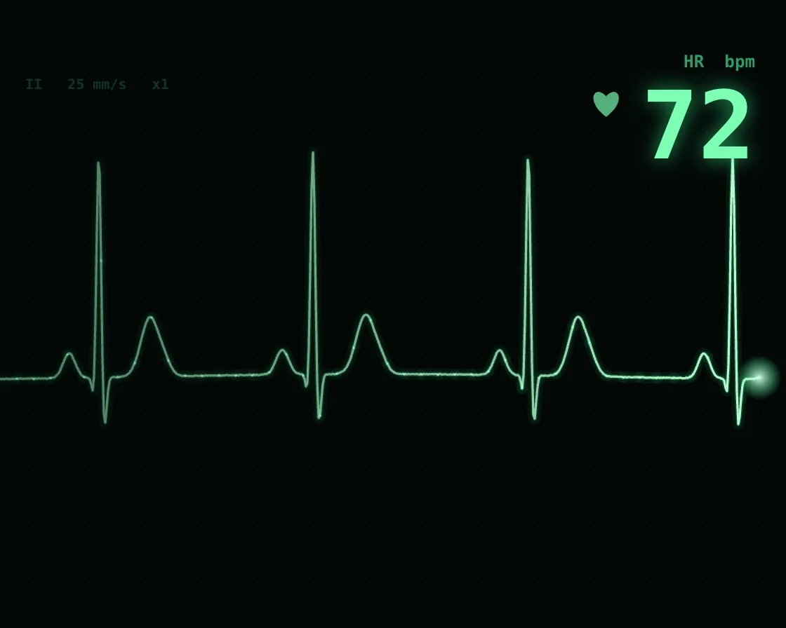

Heart monitor
Heart monitor is a Canvas effect: gaussian PQRST beats written in place behind an erase bar. One plain JavaScript file with no dependencies; add it with npx motion-library add ekg.

Open it live, tune it and copy the code
What is Heart monitor?
A green ECG trace writes across the screen, wiping a gap just ahead of the pen.
How does Heart monitor work?
Each beat sums Gaussian bumps for the P wave, QRS spike and T wave, written into a fixed buffer left to right; nothing scrolls.
How do I add Heart monitor to my website?
- In your project folder, run
npx motion-library add ekg. It writesanimations/ekg.js. Needs Node 18 or newer. - Import it and call it with a container element that has a size:
import fx from './animations/ekg.js'; const stop = fx(document.querySelector('#hero')); - Call
stop()to clean up, for example when a component unmounts.
Every setting below is also a flag, so you can install it already tuned: npx motion-library add ekg --bpm 160.
What settings can I tweak?
| Setting | Flag | Default | Range | Step |
|---|---|---|---|---|
| Heart rate | --bpm | 72 | 40 to 160 | 1 |
| Sweep speed | --sweep | 1 | 0.3 to 2.5 | 0.05 |
| Gain | --gain | 1 | 0.4 to 1.5 | 0.05 |
Specifications
- Renderer
- Canvas 2D
- Category
- Retro & signal
- Dependencies
- None
- File size
- 5.8 KB, unminified
- Interactive
- No: it plays on its own
- Reduced motion
- Respects prefers-reduced-motion
- Licence
- MIT-0: use it anywhere, no credit needed
Source code
// Heart monitor: the trace is a sum of Gaussian bumps per beat (P wave, sharp Q-R-S spike, rounded T wave), so the
// shape is anatomically right. Like a real monitor, it is written left to right into a fixed buffer and an erase
// bar runs just ahead of the pen, wiping the previous sweep; nothing scrolls. Beat length varies a little from beat
// to beat, and the rate readout averages the last few.
const PARAMS = { bpm: 72, sweep: 1, gain: 1 };
export default function (stage) {
const reduce = matchMedia('(prefers-reduced-motion: reduce)').matches;
const canvas = document.createElement('canvas');
canvas.style.cssText = 'position:absolute;inset:0;width:100%;height:100%;display:block';
stage.append(canvas);
const ctx = canvas.getContext('2d');
let W = 0, H = 0, D = 1, buf = new Float32Array(1), head = 0;
const resize = () => {
D = Math.min(devicePixelRatio, 2); W = stage.clientWidth || 1; H = stage.clientHeight || 1; canvas.width = W * D | 0; canvas.height = H * D | 0;
buf = new Float32Array(Math.ceil(W) + 2).fill(NaN); head = 0;
};
const ro = new ResizeObserver(resize); ro.observe(stage); resize();
const g = (x, m, s) => Math.exp(-((x - m) * (x - m)) / (2 * s * s));
// one beat, phase 0..1 (the beat starts just before the P wave)
const pqrst = f => 0.11 * g(f, 0.12, 0.028) - 0.09 * g(f, 0.235, 0.008) + 1.0 * g(f, 0.26, 0.0105) - 0.24 * g(f, 0.285, 0.011)
+ 0.26 * g(f, 0.5, 0.042) + 0.05 * g(f, 0.57, 0.03);
let beatStart = 0, beatLen = 60 / PARAMS.bpm, beats = [], shown = Math.round(PARAMS.bpm), pulse = 0, simT = 0, rPeakDone = false;
const signal = t => {
while (t - beatStart >= beatLen) {
beatStart += beatLen; beats.push(60 / beatLen); if (beats.length > 4) beats.shift();
shown = Math.round(beats.reduce((a, b) => a + b, 0) / beats.length);
beatLen = 60 / (PARAMS.bpm * (1 + (Math.random() - 0.5) * 0.08)); rPeakDone = false;
}
const f = (t - beatStart) / beatLen;
if (!rPeakDone && f > 0.26) { rPeakDone = true; pulse = 1; }
return pqrst(f) + 0.012 * Math.sin(t * 1.7) + (Math.random() - 0.5) * 0.003;
};
let raf, last = performance.now();
function frame(now) {
const dt = Math.min(0.05, (now - last) / 1000); last = now;
const pxPerSec = W / 4.2 * PARAMS.sweep; // about four seconds of trace across the screen
const top = H * 0.16, base = H * 0.6, amp = H * 0.36 * PARAMS.gain;
if (!reduce) {
const steps = pxPerSec * dt;
for (let s = 1; s <= Math.ceil(steps); s++) {
const x = (head + 1) % buf.length; simT += dt / Math.ceil(steps);
buf[x] = signal(simT); head = x;
}
} else if (Number.isNaN(buf[1])) { // a still: one sweep, drawn at once
for (let x = 0; x < buf.length; x++) { simT += 1 / pxPerSec; buf[x] = signal(simT); } head = buf.length - 30;
}
pulse *= Math.exp(-dt * 6);
ctx.setTransform(D, 0, 0, D, 0, 0);
ctx.fillStyle = '#020806'; ctx.fillRect(0, 0, W, H);
// faint graticule
ctx.fillStyle = 'rgba(80,255,170,0.07)';
for (let x = 20; x < W; x += 40) for (let y = top - 20; y < H - 10; y += 40) ctx.fillRect(Math.round(x), Math.round(y), 1, 1);
ctx.fillStyle = 'rgba(80,255,170,0.18)'; ctx.font = `600 ${Math.max(10, H * 0.022)}px ui-monospace, SFMono-Regular, Menlo, monospace`;
ctx.fillText('II 25 mm/s x1', 18, top - 8);
// trace, older parts dimmer, with an erase gap ahead of the pen
const gap = Math.max(18, W * 0.035), n = buf.length - 1;
const yOf = v => base - v * amp;
ctx.lineJoin = 'round'; ctx.lineCap = 'round';
for (const pass of [[8, 0.07], [3.2, 0.22], [1.6, 1]]) {
ctx.lineWidth = pass[0];
for (let c = 0; c < n; c += 12) {
ctx.beginPath(); let started = false;
for (let x = c; x <= Math.min(n, c + 12); x++) {
const ahead = (x - head + n) % n;
if (ahead > 0 && ahead < gap || Number.isNaN(buf[x])) { started = false; continue; }
const y = yOf(buf[x]);
if (!started) { ctx.moveTo(x, y); started = true; } else ctx.lineTo(x, y);
}
const age = ((head - c + n) % n) / n; // 0 at the pen, 1 one sweep ago
const b = 0.4 + 0.6 * Math.pow(1 - age, 1.5);
ctx.strokeStyle = `rgba(${pass[0] < 2 ? '190,255,215' : '60,255,150'},${(pass[1] * b).toFixed(3)})`;
ctx.stroke();
}
}
// the pen
const hy = yOf(buf[head] || 0);
const rg = ctx.createRadialGradient(head, hy, 0, head, hy, 16);
rg.addColorStop(0, 'rgba(220,255,235,0.9)'); rg.addColorStop(1, 'rgba(60,255,150,0)');
ctx.fillStyle = rg; ctx.fillRect(head - 16, hy - 16, 32, 32);
// rate readout
const fs = Math.min(H * 0.16, W * 0.12), rx = W - 22;
ctx.textAlign = 'right'; ctx.textBaseline = 'alphabetic';
ctx.font = `600 ${fs * 0.18}px ui-monospace, SFMono-Regular, Menlo, monospace`;
ctx.fillStyle = 'rgba(80,255,170,0.6)'; ctx.fillText('HR bpm', rx, H * 0.08 + fs * 0.18);
ctx.font = `700 ${fs}px ui-monospace, SFMono-Regular, Menlo, monospace`;
ctx.shadowColor = 'rgba(60,255,150,0.6)'; ctx.shadowBlur = 14 * D;
ctx.fillStyle = '#7dffb4'; ctx.fillText(String(shown), rx, H * 0.08 + fs * 1.15);
ctx.shadowBlur = 0;
// a heart that beats on every R wave
const hs = fs * 0.2 * (1 + pulse * 0.35), hx = rx - ctx.measureText(String(shown)).width - hs * 1.6, hyy = H * 0.08 + fs * 0.62;
ctx.save(); ctx.translate(hx, hyy); ctx.scale(hs / 16, hs / 16);
ctx.beginPath(); ctx.moveTo(0, 6); ctx.bezierCurveTo(-16, -6, -8, -18, 0, -9); ctx.bezierCurveTo(8, -18, 16, -6, 0, 6); ctx.closePath();
ctx.fillStyle = `rgba(125,255,180,${0.35 + pulse * 0.65})`; ctx.fill(); ctx.restore();
ctx.textAlign = 'left';
raf = requestAnimationFrame(frame);
}
raf = requestAnimationFrame(frame);
return () => { cancelAnimationFrame(raf); ro.disconnect(); canvas.remove(); };
}